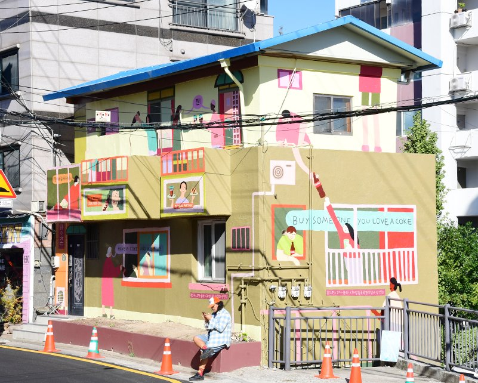

레옹 모카 (LÉON MOH-CAH) 작가
벽화

해방촌의 이웃 풍경을 담은 벽화
해방촌을 꾸준히 작품에 담아온 프랑스 출신 작가가 창문 너머
서로 말을 건네는 이웃들의 모습으로 해방촌 특유의 유대감을 표현한 벽화.
4년 전 우연히 찾은 해방촌의 풍경에 반해 수많은 스케치북을 채웠다.
골목 곳곳을 그리던 여행자는 어느새 한국에 정착해
해방촌과의 인연을 계속 이어가고 있다.
“제가 그린 그림 속 사람들은
서로 이야기를 나누고,
도움을 주고받아요.
해방촌이 가진 그런
따뜻한 관계를 전하고 싶었어요.”